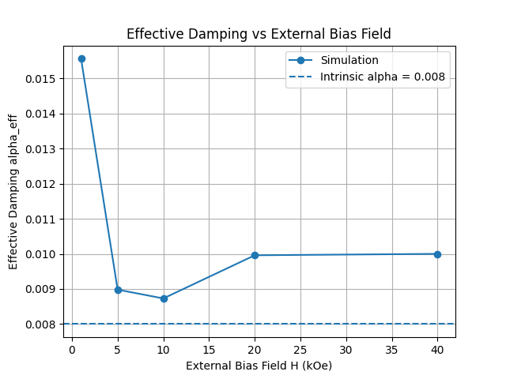
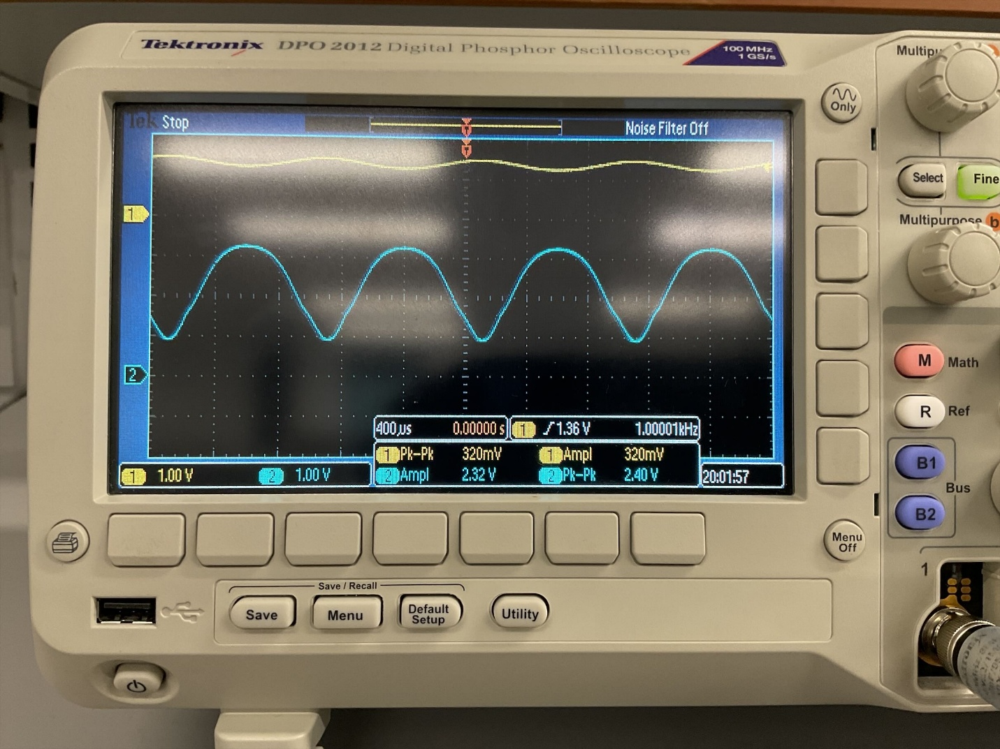

Adrian Corrales
ECE senior at UT Austin seeking entry-level roles in semiconductor process, device, test, or equipment engineering. Hands-on cleanroom fabrication and circuit design experience.
Projects

Micromagnetic Simulation of Magnetic Damping
GPU-accelerated simulations of magnetization dynamics and Gilbert damping in ferromagnetic structures.

Two-Stage MOSFET LED Driver
Two-stage amplifier design (common-source + source follower) with measured and calculated gain.
FPGA-Based Programmable Stopwatch/Timer
Multi-mode stopwatch/timer built with RTL methodology, with real-time button/switch/display I/O.

C-Based Video Game
Two-player soccer game built with a partner, with a custom button/slide-pot/display I/O interface.
About
I'm Adrian Corrales, an Electrical and Computer Engineering senior at the University of Texas at Austin. My coursework has covered semiconductor device physics, magnetic materials and spintronics, transistor circuit design, digital logic, and IC nanomanufacturing (photolithography, thermal oxidation, diffusion, wet etch). That background is what's pointed me toward semiconductor process, device, test, and equipment engineering, and I'm currently looking for an entry-level role in that space. Outside of that, I spend my free time outdoors — golf, lately.